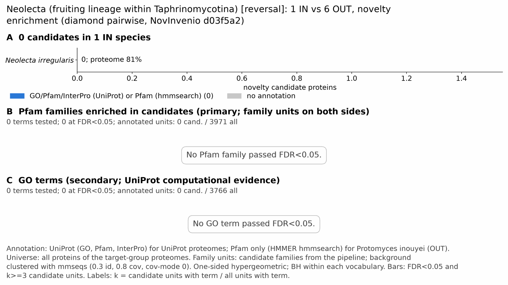

yc rev neolecta: functional enrichment (novelty)
One-sided hypergeometric test per term; Benjamini-Hochberg FDR within each scope, level and vocabulary. Candidates are the novelty candidates: gene families present in the IN group and absent from the OUT group. Universe: proteome. Background clustered: True (5530 sequences in 5245 clusters, mmseqs easy-cluster --min-seq-id 0.3 -c 0.8). Family level: one unit per candidate family and per background cluster.
Sources: Pfam: 2026-01-27-Pfam38.2; InterPro entries: 110.0; GO: releases/2026-07-26; analysis generated 2026-10-24T14:58:01. Source tables: /bigdata/stajichlab/jstajich/projects/NovInvenio_Investigations/studies/fungi/yeast_convergence/yc_rev_neolecta/analysis/enrichment/outputs/proteome_clustered.
Full record: PROVENANCE. Run report: report.html.
Related: yeast_convergence: comparison across contrasts
- No novelty candidates. The run called 0 candidate proteins, so no enrichment test was run and the tables below are empty. This is not a test result. See the study README for why a contrast can have none.
- Annotation provenance is not fully recorded: PROVENANCE.yaml lists the per-species annotation files and their checksums, but not the UniProt release they come from.
- GO results are secondary. GO annotations include computational evidence (IEA, IBA); the GO evidence column shows if a term has non-IEA support.
- Candidate families (pipeline clustering of candidates) and background clusters (mmseqs clustering of the background proteome) are made by different runs, so family-level counts are not fully comparable.
Summary figure

Annotation coverage
Fraction of proteins with at least one term per vocabulary. Universe = all proteins of the species; candidates = the candidate set.
| Species | Set | Proteins | Pfam | Pfam clan | InterPro | GO | Any |
|---|---|---|---|---|---|---|---|
| Nirr | universe | 5530 | 76.0% | 60.9% | 80.6% | 72.0% | 80.9% |
| Nirr | candidates | 0 | 0.0% | 0.0% | 0.0% | 0.0% | 0.0% |
| ALL_IN | universe | 5530 | 76.0% | 60.9% | 80.6% | 72.0% | 80.9% |
| ALL_IN | candidates | 0 | 0.0% | 0.0% | 0.0% | 0.0% | 0.0% |
Tests summary
Per vocabulary: terms with FDR < 0.05 / terms tested. Protein level counts proteins; family level counts candidate families and background clusters.
| Scope | Level | Cand. units | Pfam sig / tested | Pfam clan sig / tested | InterPro sig / tested | GO sig / tested |
|---|---|---|---|---|---|---|
| whole_set | family | 0 | 0 / 0 (skipped_no_annotated_candidates) | 0 / 0 (skipped_no_annotated_candidates) | 0 / 0 (skipped_no_annotated_candidates) | 0 / 0 (skipped_no_annotated_candidates) |
| whole_set | protein | 0 | 0 / 0 (skipped_no_annotated_candidates) | 0 / 0 (skipped_no_annotated_candidates) | 0 / 0 (skipped_no_annotated_candidates) | 0 / 0 (skipped_no_annotated_candidates) |
| Nirr | family | 0 | 0 / 0 (skipped_no_annotated_candidates) | 0 / 0 (skipped_no_annotated_candidates) | 0 / 0 (skipped_no_annotated_candidates) | 0 / 0 (skipped_no_annotated_candidates) |
| Nirr | protein | 0 | 0 / 0 (skipped_no_annotated_candidates) | 0 / 0 (skipped_no_annotated_candidates) | 0 / 0 (skipped_no_annotated_candidates) | 0 / 0 (skipped_no_annotated_candidates) |
Top 25 Pfam terms (whole set, family level)
No whole-set family-level rows for this vocabulary.
Top 25 InterPro terms (whole set, family level)
No whole-set family-level rows for this vocabulary.
Top 15 GO terms (whole set, family level) — secondary, computational evidence (IEA/IBA) included
No whole-set family-level rows for this vocabulary.
Actin cytoskeleton controls
Known actin-related families and how many of their proteins pass each filter. Protein ID columns are left out.
| control | pfam_ids | desc_regex | IN_universe | IN_in_matrix | IN_pass_ingroup_rule | candidates | near_miss_out1 | near_miss_out2 | n_Nirr | n_Spom | n_Schiocto | n_Schijapo | n_Saitcomp | n_Taphdefo | n_Protinou |
|---|---|---|---|---|---|---|---|---|---|---|---|---|---|---|---|
| Arp2/3 ARPC2 (P34-Arc) | PF04045 | 1 | 1 | 1 | 0 | 0 | 0 | 1 | 1 | 1 | 1 | 1 | 1 | 1 | |
| Arp2/3 ARPC3 (P21-Arc) | PF04062 | 0 | 0 | 0 | 0 | 0 | 0 | 0 | 1 | 1 | 1 | 1 | 1 | 1 | |
| Arp2/3 ARPC4 | PF05856 | 1 | 1 | 1 | 0 | 0 | 0 | 1 | 1 | 1 | 1 | 1 | 1 | 1 | |
| Arp2/3 ARPC5 (P16-Arc) | PF04699 | 1 | 1 | 1 | 0 | 0 | 0 | 1 | 1 | 1 | 1 | 1 | 0 | 1 | |
| Arp2/3 ARPC1 (description only) | arp2/3 complex.*(41|p41|subunit 1)|ARPC1 | 1 | 1 | 1 | 0 | 0 | 0 | 1 | 0 | 0 | 0 | 0 | 0 | 0 | |
| Arp2 / Arp3 (description only) | actin-related protein (2|3)\b|\bARP[23]\b | 6 | 6 | 6 | 0 | 0 | 0 | 6 | 7 | 7 | 7 | 5 | 6 | 0 | |
| WAVE complex NCKAP1 | PF09735 | 0 | 0 | 0 | 0 | 0 | 0 | 0 | 0 | 0 | 0 | 0 | 0 | 0 | |
| WAVE complex CYFIP (FragX_IP) | PF05994 | 0 | 0 | 0 | 0 | 0 | 0 | 0 | 0 | 0 | 0 | 0 | 0 | 0 | |
| WAVE complex ABI | PF07815|PF27594 | 0 | 0 | 0 | 0 | 0 | 0 | 0 | 0 | 0 | 0 | 0 | 0 | 0 | |
| SCAR/WAVE (SCAR_helical) | PF27569 | 0 | 0 | 0 | 0 | 0 | 0 | 0 | 0 | 0 | 0 | 0 | 0 | 0 | |
| WASP family (WH1) | PF00568 | 1 | 1 | 1 | 0 | 0 | 0 | 1 | 1 | 1 | 1 | 1 | 1 | 1 | |
| WH2 motif (WASP, WAVE, others) | PF02205 | 2 | 2 | 2 | 0 | 0 | 0 | 2 | 2 | 2 | 2 | 2 | 3 | 3 | |
| Formin FH2 | PF02181 | 1 | 1 | 1 | 0 | 0 | 0 | 1 | 3 | 3 | 3 | 2 | 1 | 2 | |
| Formin Drf_GBD / Drf_FH3 / Drf_DAD | PF06371|PF06367|PF06345 | 2 | 2 | 2 | 0 | 0 | 0 | 2 | 4 | 4 | 4 | 3 | 2 | 2 | |
| Ena/VASP (VASP_tetra) | PF08776 | 0 | 0 | 0 | 0 | 0 | 0 | 0 | 0 | 0 | 0 | 0 | 0 | 0 | |
| Coronin (description only) | coronin | 1 | 1 | 1 | 0 | 0 | 0 | 1 | 1 | 1 | 1 | 1 | 0 | 0 | |
| Cortactin (HS1_rep) | PF02218 | 0 | 0 | 0 | 0 | 0 | 0 | 0 | 0 | 0 | 0 | 0 | 0 | 0 | |
| Myosin 2 tail (Myosin_tail_1) | PF01576 | 0 | 0 | 0 | 0 | 0 | 0 | 0 | 0 | 0 | 0 | 0 | 0 | 0 | |
| Myosin head (all myosins) | PF00063 | 5 | 5 | 5 | 0 | 0 | 0 | 5 | 5 | 5 | 5 | 3 | 3 | 4 |
Page written by bin/generate_enrichment_page.py.